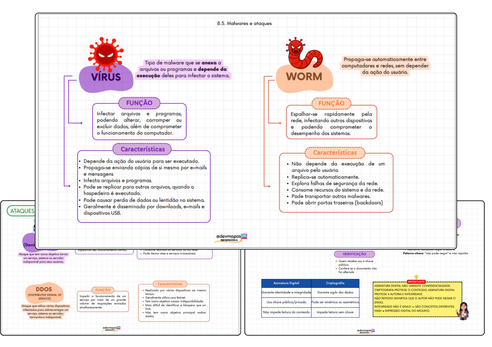

InfoCards: Mapas Mentais Visuais de Informática
Chega de perder horas relendo apostilas. Estude Informática por meio de mapas mentais visuais que organizam os conteúdos mais cobrados em concursos para você entender mais rápido, revisar melhor e chegar preparado para gabaritar a prova.

Estudar informática do jeito tradicional cansa (e não gruda)
Matéria cheia de detalhes
Comandos, atalhos, versões, protocolos... são tantas informações soltas que fica difícil saber o que realmente cai na prova.
Muitas páginas para estudar
Apostilas longas tomam um tempo enorme — tempo que você poderia usar para resolver mais questões.
Revisão de véspera impossível
Na reta final não dá pra reler tudo de novo. Sem um resumo visual, a sensação de "branco" na hora da prova é quase certa.
Conheça os InfoCards
Cada InfoCard resume um tema inteiro de informática em uma única página visual: ícones, cores, setas e hierarquia clara no lugar de parágrafos longos. É o mesmo conteúdo das apostilas, só que organizado para o seu cérebro guardar mais rápido.
- Mapas mentais prontos, sem precisar montar do zero
- Organizados por categoria, fáceis de encontrar
- Ideais para revisão rápida antes da prova
8 categorias, um clique de distância
Clique em uma categoria para ver do que trata o InfoCard.
Hardware
Carregando...
Amostras do material
Substitua os quadros abaixo pelas imagens reais das páginas do seu material
(basta trocar as classes .sample-card por uma tag <img> no HTML).
Feito para quem tem pouco tempo e prova marcada
Revisão rápida
Revise um tema inteiro em minutos, não em horas.
Conteúdo organizado
Tudo separado por categoria, sem bagunça.
Ideal para concursos
Foco no que realmente costuma ser cobrado nas provas.
Fácil memorização
Visual + cor + hierarquia = informação que gruda.
Depoimentos
Espaço reservado para prints de depoimentos de alunos. Troque cada bloco abaixo
pela imagem do print (<img>) quando tiver os materiais.
Print do depoimento aqui
Print do depoimento aqui
Print do depoimento aqui
Garanta agora os InfoCards de Informática
Acesso imediato após a confirmação da compra.
Perguntas frequentes
O acesso é liberado automaticamente por e-mail assim que o pagamento é confirmado pela Kiwify.
É 100% digital. Você pode estudar pelo celular, tablet ou computador, e também imprimir se preferir.
Sim. Os InfoCards cobrem os temas de informática mais cobrados em concursos de nível médio e superior.
Sim, você pode personalizar aqui o prazo de garantia oferecido na sua página de checkout da Kiwify.